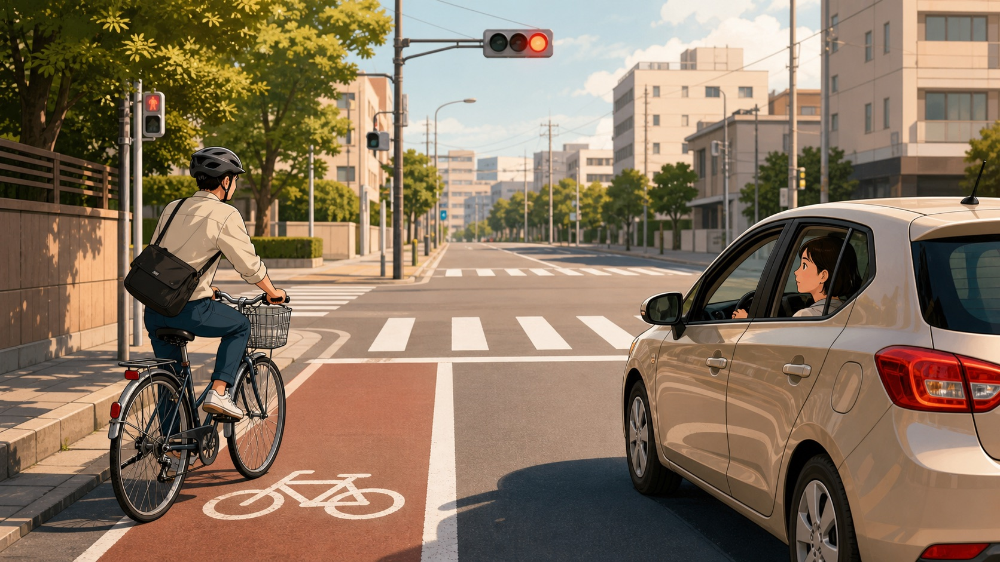
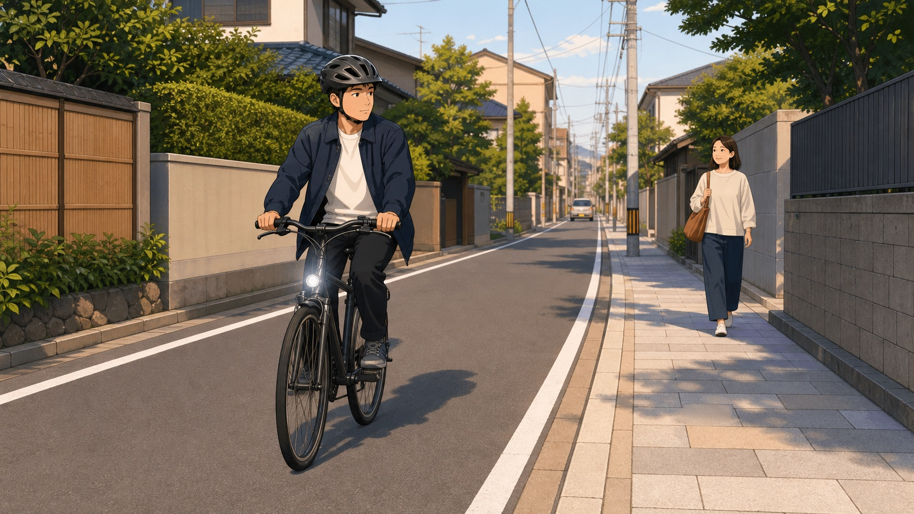
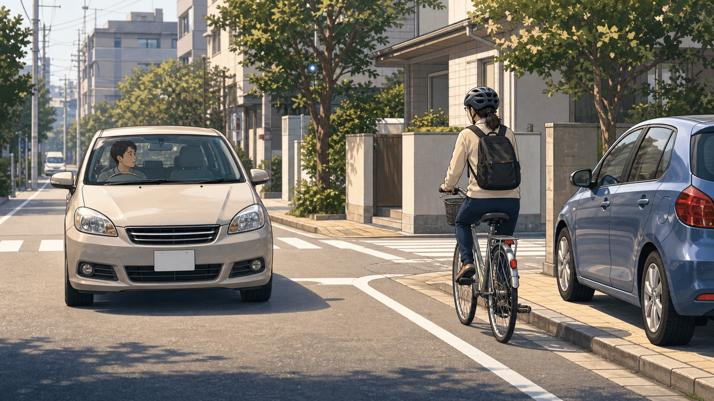

No Japão, bicicleta não é brinquedo solto no trânsito. Ela é tratada como veículo em muitas situações, por isso o ciclista precisa respeitar sinal, parada obrigatória, mão correta e prioridade do pedestre. Para o motorista, a regra mental também muda: bicicleta pode estar na via, pode precisar desviar de bueiro, guia, carro estacionado ou pedestre, e não deve ser espremida contra o meio-fio.
Este guia resume as regras oficiais mais importantes e transforma em atitude prática para o cotidiano de brasileiros no Japão. Use como orientação inicial e confira sempre as informações da polícia, da prefeitura e da sinalização local.
Para quem pedala
A regra-base é simples: bicicleta deve circular pela via e manter a esquerda. A calçada é exceção, não o caminho automático. Quando houver placa permitindo bicicleta na calçada, quando o ciclista for criança, idoso ou pessoa com deficiência, ou quando a rua estiver perigosa demais, a calçada pode ser usada com cuidado redobrado.
Na calçada, o pedestre manda no ritmo. O ciclista deve ir devagar, ficar do lado mais próximo da rua quando possível e descer para empurrar a bicicleta se estiver atrapalhando a passagem. Em faixa de pedestres, a prioridade continua sendo de quem está a pé.

Cruzamentos, luz e capacete
Em cruzamento, pare no sinal vermelho, obedeça a placa de parada obrigatória e confirme os dois lados antes de seguir. Em conversão à direita, a orientação oficial para bicicletas em cruzamentos com semáforo é atravessar em linha reta, parar do outro lado, virar a bicicleta para a nova direção e seguir quando o novo sinal estiver verde.
À noite, acenda a luz. Além de ser uma regra de segurança, ela muda completamente a forma como motoristas enxergam você em ruas estreitas. O capacete aparece como esforço recomendado nas orientações oficiais: use, especialmente em trajeto diário, chuva, noite, escola, trabalho e ruas com caminhões ou ônibus.
O que evitar sempre
Não pedale alcoolizado. Não use celular na mão enquanto pedala, nem fique olhando a tela em movimento. A Polícia Metropolitana de Tóquio informa que as regras contra celular ao pedalar ficaram puníveis desde 1 de novembro de 2024, e que infrações ligadas a bebida também foram reforçadas para ciclistas.
Também evite fones que bloqueiem o som do trânsito, guarda-chuva aberto, levar passageiro fora das condições permitidas, atravessar no susto e entrar na contramão só porque a rua parece vazia. No Japão, muita rua residencial é estreita, silenciosa e cheia de saídas de garagem.
Para quem dirige
Motorista precisa assumir que pode haver ciclista à esquerda, mesmo em rua pequena. Reduza antes de ultrapassar, mantenha distância lateral e espere quando a rua não der espaço. Passar raspando para economizar alguns segundos cria o tipo de susto que vira queda.
Tenha atenção especial em conversões à esquerda, entradas de estacionamento, portas de carro estacionado e cruzamentos sem muita visibilidade. Antes de abrir a porta, olhe pelo retrovisor e por cima do ombro. Antes de virar, procure a bicicleta que ficou escondida no ponto cego.

Convivência prática
Para ciclistas: sinalize intenção com antecedência, seja previsível, não dispute espaço com ônibus e caminhões, e trate cada cruzamento pequeno como se alguém pudesse aparecer. Para motoristas: antecipe o movimento do ciclista, preserve espaço, não buzine para pressionar e lembre que vento, chuva, guia alta e carro estacionado mudam a linha da bicicleta.
As regras existem para reduzir ambiguidade. Quando cada lado entende o papel do outro, a bicicleta deixa de ser surpresa e vira parte normal da rua japonesa.
Atenção: regras, fiscalização e valores de penalidade podem mudar. Em fevereiro de 2026, a Polícia Metropolitana de Tóquio publicou material sobre emissão de tickets para infrações de ciclistas. Antes de decidir com base em multa ou processo, consulte a polícia local ou fonte oficial atualizada.